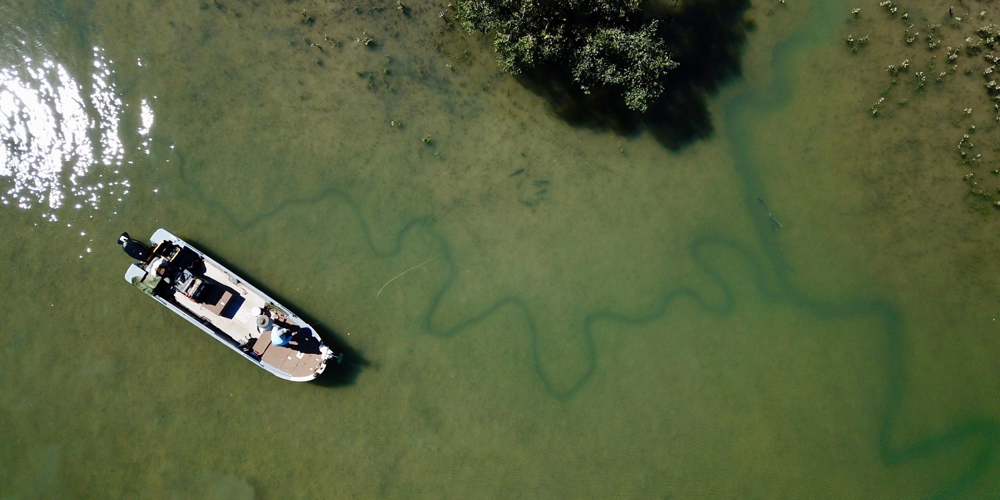
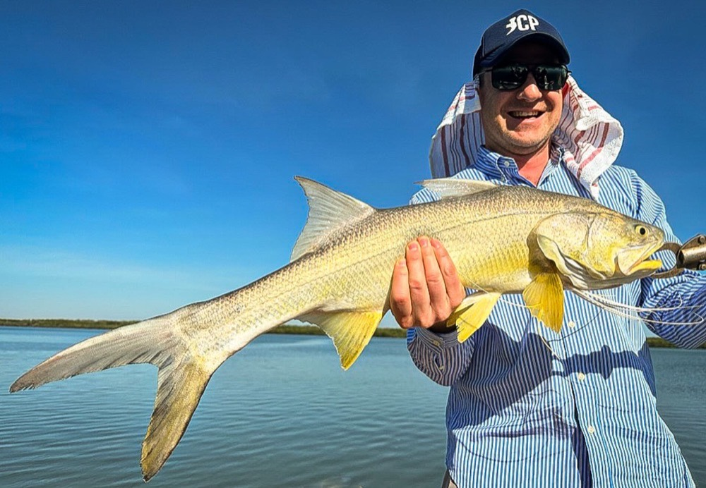
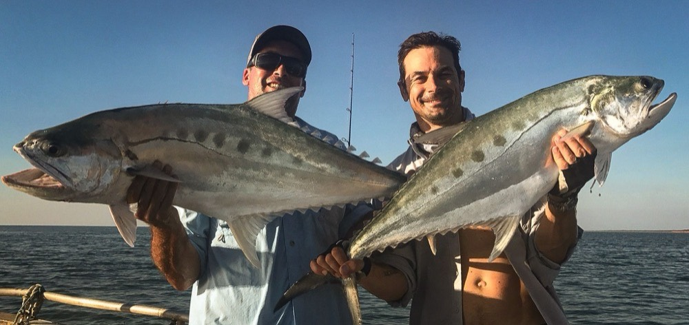
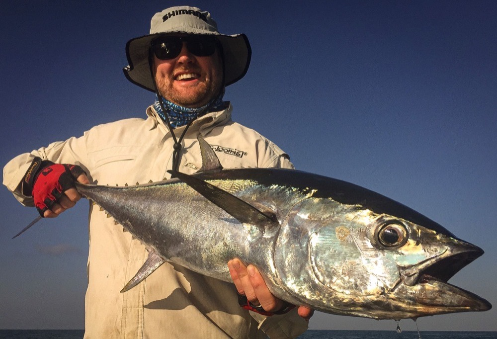
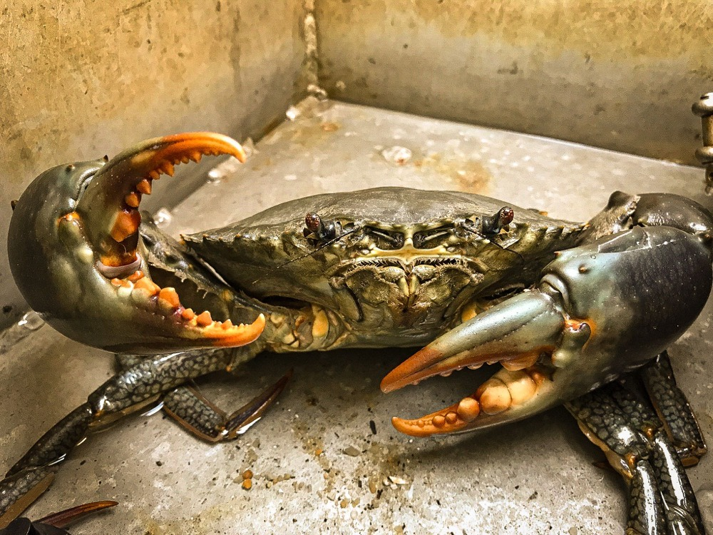

As seen & heard on



Bynoe Harbour NT / -12.63°S, 130.57°E
Dundee Beach & Bynoe Harbour · Sight-Cast Barra & Bluewater · Early Jun – End Dec
As seen & heard on
As the wet season fades and the clean water pushes back in, the fishing moves to the coast — and there's no better patch of it than the country between Dundee Beach and Bynoe Harbour. Three to eight days across the Top End, with a focus on shallow-water sight-casting for barramundi in Bynoe Harbour.
Mangrove-lined river and creek systems, sand flats, bays, inlets, islands and coastal reefs make Bynoe Harbour a shallow-water angler's paradise. As a fishing travel destination it's a great wilderness escape — unspoiled beaches, low wooded islands surrounded by clear water, rocky headlands and sandy tidal flats that can turn on some heart-pumping fishing when the conditions are right.
"Clean shallow water and a barra you can see before you cast at it — when Bynoe turns it on, there's nothing else like it up here."— Watty

The many islands, creeks, bays and rocky outcrops of Bynoe Harbour provide world-class barramundi fishing — with bonus species like trevally, queenfish, blue and king threadfin salmon, mangrove jack, golden snapper, barracuda, black jewfish, shark, grunter and cod along for the ride.
As elsewhere in the Territory, estuarine crocodiles and huge numbers of birds are part of the scenery — keep the camera handy, because some of the best shots of the trip aren't fish.

Your guide
No blow-in guides who don't know the water — you fish with me, every single day. I'm an IGFA captain & guide and a PFIGA-certified fishing instructor, a full-time local professional who's been there, done the homework and paid his dues.
Famous for spectacular visual strikes and aerial displays, the country's premier sportfish will get you hooked for life. If you fish and are yet to venture to barra country, you're in the right hands.





Word of mouth
"Everything you look for in a guide — wise, calm, encouraging and entertaining."
— TripAdvisor review
"We can honestly say we learnt a lot and enjoyed every minute."
— TripAdvisor review · Shady Camp, Mary River
"His patience and coaching enabled her to land her first barra."
— TripAdvisor review

Availability
Tide is crucial to a successful trip out here — the seven days leading up to the full and new moons are the prime time, and these trips only run on the best tides of each month of the season. That limits it to about six weeks a year, and those dates often book out up to two years in advance.
2026 — fully booked
2027 dates · Bynoe & Dundee
From late February to early June the floodwaters drain off the plains and the barra pour into the rivers — the peak of the barra season, fished out of Kakadu's World-Heritage water.
Further afield, Watty is also a director of — and very active in — Angling Adventures, hosting trips to the best fishing spots around Australia and the world. If they haven't been there, they won't send you there.
Getting around
No taxis, no waiting on a transfer, no being stuck out bush without wheels. The Barefoot courtesy ute — a dual-cab four-wheel-drive Isuzu D-Max with a lockable canopy — is left at Darwin airport for you. Pick it up when you land and it's yours for the whole trip.
Drive out the night before and wake up on the water, or head out on the morning of day one and meet Watty at the ramp. Whatever suits your flights.


Price guide — 2027/28 bookings
Every Barefoot trip is private — just you and your crew, never mixed in with strangers. Prices are per angler in AUD, and the more of you aboard, the better the per-head rate (you're sharing the one boat and guide). Boat-only from $2,485 pp · fully catered from $3,925 pp.
Everything sorted — just bring yourself.
| Nights | Group of 4 | Group of 3 | Group of 2 |
|---|---|---|---|
| 3 days fishing | |||
| 3 nights | $3,925 | $4,352 | $4,842 |
| 4 nights | $3,925 | $4,817 | $5,307 |
| 4 days fishing | |||
| 4 nights | $5,078 | $5,648 | $6,301 |
| 5 nights | $5,543 | $6,113 | $6,766 |
| 5 days fishing | |||
| 5 nights | $6,231 | $6,943 | $7,760 |
| 6 nights | $6,696 | $7,408 | $8,225 |
| 6 days fishing | |||
| 6 nights | $7,385 | $8,239 | $9,219 |
| 7 nights | $7,850 | $8,704 | $9,684 |
| 7 days fishing | |||
| 7 nights | $8,538 | $9,535 | $10,678 |
| 8 nights | $9,003 | $10,000 | $11,143 |
You arrange your own meals & accommodation — with local guidance on the good options.
| Nights | Group of 4 | Group of 3 | Group of 2 |
|---|---|---|---|
| 3 days fishing | |||
| 3 nights | $2,485 | $2,912 | $3,402 |
| 4 nights | $2,950 | $3,377 | $3,867 |
| 4 days fishing | |||
| 4 nights | $3,158 | $3,728 | $4,381 |
| 5 nights | $3,623 | $4,193 | $4,846 |
| 5 days fishing Most booked | |||
| 5 nights | $3,831 | $4,543 | $5,360 |
| 6 nights | $4,296 | $5,008 | $5,825 |
| 6 days fishing | |||
| 6 nights | $4,505 | $5,359 | $6,339 |
| 7 nights | $4,970 | $5,824 | $6,804 |
| 7 days fishing | |||
| 7 nights | $5,178 | $6,175 | $7,318 |
| 8 nights | $5,643 | $6,640 | $7,783 |
Solo (1-angler) private trips available on request. Alcoholic & soft drinks not included.

Lock in your window
Tell me who's coming and when you can get away, and I'll come back with the best tide windows still open. No obligation — worst case you'll know exactly what a Dundee & Bynoe week looks like for your crew.
Out on the water most days — if I don't pick up, text or WhatsApp and I'll get back to you off the water.
Free guide
Everything worth knowing before a Dundee & Bynoe trip — where we fish, how the days run, what’s included and what to bring. Free, straight to your inbox.
No spam — just good Top End fishing. Unsubscribe anytime.